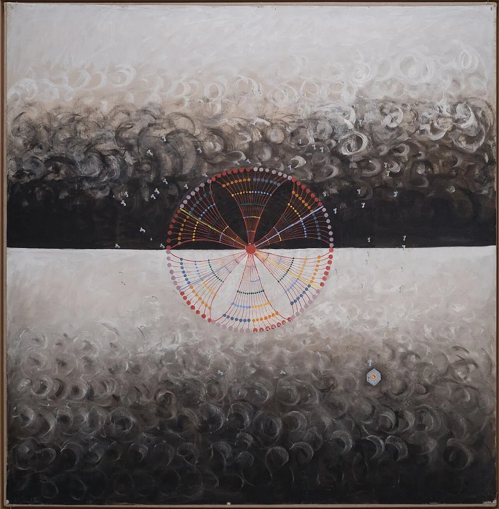
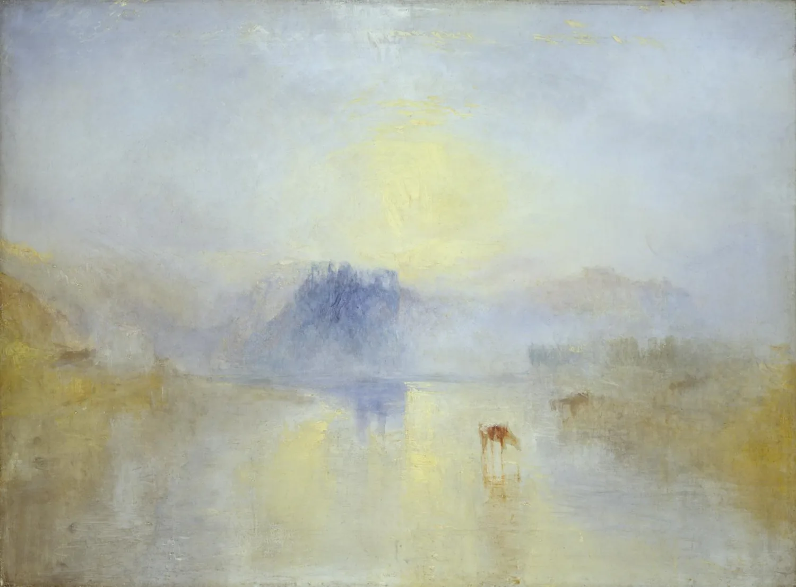
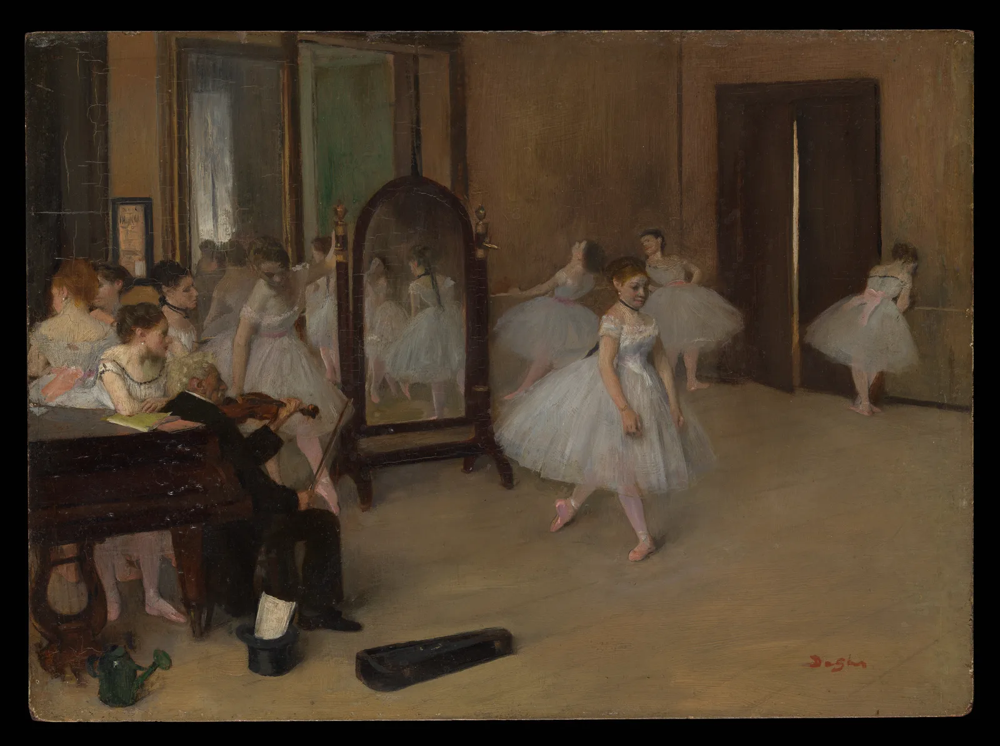

the hero, inside the product. not a disconnected poster.
The first paint is already complete. One optional registration explains the system once, then the hero becomes perfectly still.
dmklochko.com/eidos
eidos
dmytro klochko ↗a living moodboard
a beautiful, endless moodboard of things i love.
paintings, prints and posters. open one, wander, or help me choose what joins next.
start lookingdiscover something

the moodboard
every work kept on purpose



